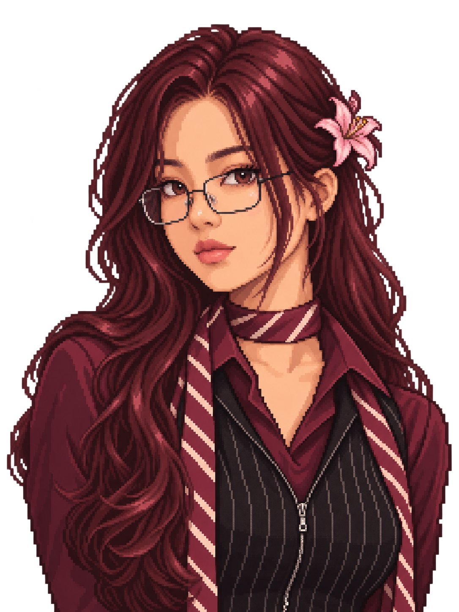

RESEARCH / PUBLIC SPEAKING
Women and Health
Presented Women and Health research at a TED Talks event in Aktobe, supported by the Embassy of the Netherlands. The research was recognized as the most relevant.
PORTFOLIO
AITU student · DSEW SMM Vice President · Hard Mentoring leadership team
View experience
SELECTED WORK
RESEARCH / PUBLIC SPEAKING
Presented Women and Health research at a TED Talks event in Aktobe, supported by the Embassy of the Netherlands. The research was recognized as the most relevant.
SMM / CREATIVE COMMUNICATION
Vice President of DSEW's SMM Department. Two months of work in filming, video editing, visual design and concept development.
LEADERSHIP
Hard Mentoring leadership team member and deputy group leader.
COMMUNITY
Volunteer at SOL's Kazakh-language school.
WORK & ACTIVITIES
Public speaker
One year in an Aktobe self-development club, speaking in English, Kazakh and Russian.
Barista & sales manager
Barista: one year. Sales manager: five months.
Ballet & hackathons
Three years at ballet school. Hackathon participant.
Award
AITU Active Student 2025.